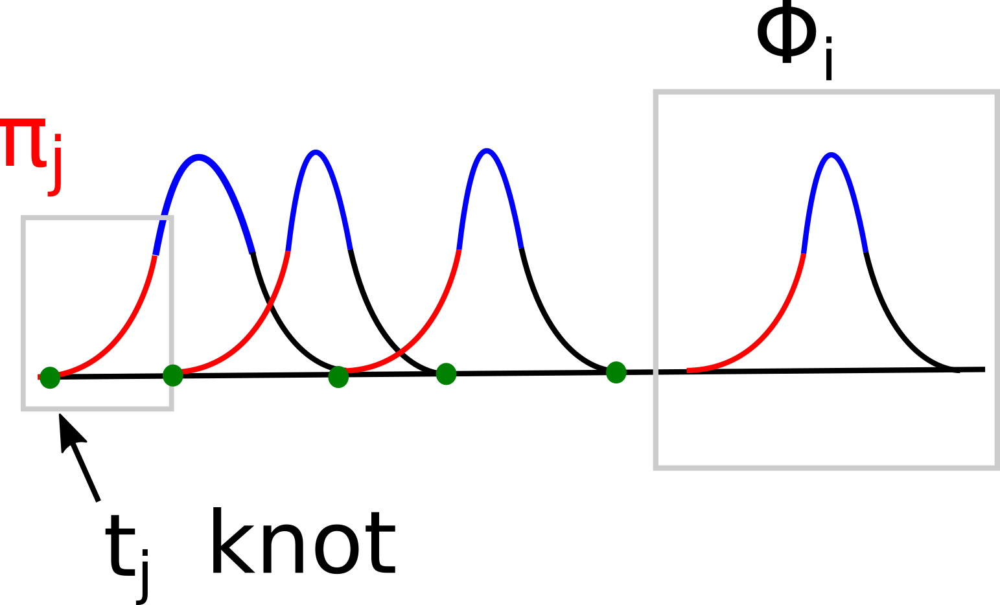

B-splines are among the most important curve representations in CAD. They provide a powerful way of constructing smooth curves using local polynomial pieces. Unlike a single high-degree polynomial curve, a B-spline curve is built from several low-degree polynomial segments joined together with prescribed continuity at the knots.
Throughout this section, we use the following notation:
The knot vector is written as
The B-spline basis function is denoted by
where the first suffix denotes the order and the second suffix denotes the basis-function index. The support of \(N_{m,i}\) is
Continuity of Functions
Let \(\phi(u)\) be a scalar function defined on an interval \([a,b]\). We say
if the derivatives
exist and are continuous for all
Thus, \(C^0\) continuity means that the function itself is continuous. \(C^1\) continuity means that the function and its first derivative are continuous. Similarly, \(C^2\) continuity means that the function, first derivative and second derivative are continuous.
Definition of a Spline
A spline is a composite curve made by joining several polynomial pieces together in such a way that a desired level of continuity is maintained at the joining points.
Suppose the interval \([a,b]\) is divided into subintervals by knots:
On each subinterval, a polynomial segment is defined. For example,
may be defined on
The complete spline is obtained by joining these polynomial pieces:
The joining conditions at the knots determine the smoothness of the spline.
When we refer to a function \(\phi(u)\) as a compactly supported spline, we usually mean that it satisfies the following properties:
\(\phi(u)\) has a prescribed level of continuity.
\(\phi(u)\neq 0\) only inside a finite interval.
\(\phi(u)=0\) outside that interval.
The interval where \(\phi(u)\neq 0\) is called the support of the spline.
B-Spline Curve
A B-spline curve is written as
where
are the control points and \(N_{m,i}(u)\) are the B-spline basis functions of order \(m\).
Each basis function \(N_{m,i}(u)\) is made of polynomial pieces. If the degree is \(n\), then
The basis function \(N_{m,i}\) has support
Therefore, \(N_{m,i}(u)\) influences the curve only in this interval.

Polynomial Splines with One Knot
To understand B-spline basis functions, it is useful to begin with a simple polynomial that is cut at a knot.
Let
be a polynomial of degree \(n\).
Let \(u_0\) be a knot. Define a new function
For \(\psi(u)\) to be continuous at \(u=u_0\), we require
Since \(\psi(u_0^-)=0\), we need
Therefore, \(\Pi_n(u)\) may be written as
If
then
This implies
If \(p=n\), then all coefficients would vanish, which contradicts the requirement that the polynomial has degree \(n\). Hence the maximum possible continuity is
Therefore, the simplest nonzero function of this kind is
and zero otherwise.
This motivates the definition of the truncated power function:
Methods for Constructing B-Spline Basis Functions
The construction of B-spline basis functions may be approached in several ways.
Direct method by solving linear equations.
Recursive or iterative method.
Divided difference method.
Blossoming technique.
In the direct method, one assumes polynomial pieces in each interval and then imposes continuity conditions at the knots. This leads to a system of linear equations for the polynomial coefficients.
However, the direct method is not the most efficient method for computation. The Cox–de Boor recursive formula is more useful in practice and is widely used in CAD.
Cox–de Boor Recursion
The B-spline curve is written as
The order-one basis function is
For \(m>1\), the basis functions are defined recursively by
If a denominator is zero, the corresponding term is taken as zero.
The recursive construction is numerically stable and is the standard method used in CAD and geometric modeling.
Divided Difference Method
The Cox–de Boor recursion has a deep connection with divided differences. To understand the mathematical properties of B-spline basis functions, it is useful to study divided differences.
Divided differences are discrete analogues of derivatives. They measure how function values change over a set of knots.
Let
be a set of knots. The zeroth divided difference is
The first divided difference is
The second divided difference is
In general, the \(p^{\text{th}}\) divided difference is
For compact notation, define
Then
Example: Divided Differences of \(u^3\)
Let
and let
The function values are
The first divided differences are
The second divided differences are
The third divided differences are
The fourth divided differences are
Some useful general results are:
where \(c\) is a constant. If \(\pi_{n-1}\) is a polynomial of degree \(n-1\), then
Explicit Formula for Divided Differences
The divided difference can also be written in explicit form. Let
Then
Here \(w'(u_r)\) means the derivative of \(w(s)\) evaluated at \(s=u_r\).
B-Spline Basis Function from Divided Differences
A B-spline basis function can be expressed using divided differences of a truncated power function.
Define
where \(u_\nu\) denotes the knot values
Then a normalized B-spline basis function is
Equivalently,
Properties from the Divided Difference Definition
We now show why
has the essential properties of a B-spline basis function.
Using the explicit formula for divided differences,
where
Continuity
Each term
is a truncated power function of degree \(m-1\). Hence it is
continuous.
Since \(M_{m,i}(u)\) is a linear combination of such terms, it is also
Therefore, the corresponding B-spline basis function \(N_{m,i}(u)\) is
continuous when all knots are distinct.
Compact Support
For
we have
Therefore,
for every term. Hence,
For
all truncated powers become ordinary polynomials:
Thus,
Since \((u_\nu-u)^{m-1}\) is a polynomial of degree \(m-1\), its \(m^{\text{th}}\) divided difference is zero:
Therefore,
Hence,
Integral of the Basis Function
A useful result is
Since
we obtain
For uniform knots with spacing \(h\), this becomes
Derivation of the Cox–de Boor Formula from Divided Differences
The Cox–de Boor recursion can be obtained from the divided-difference representation of B-splines.
Let
Using a product decomposition of the truncated power function and applying the Leibniz rule for divided differences, one can show that
Using the recursive definition of divided differences,
Therefore,
Rearranging,
Now use the normalization
and
Substituting these into the previous expression gives
This is precisely the Cox–de Boor recursive formula.
Summary
A B-spline basis function may be understood in two complementary ways.
First, it can be defined recursively using the Cox–de Boor formula:
Second, it can be defined using divided differences of truncated power functions:
The divided-difference form is useful for understanding the mathematical properties of B-splines, while the Cox–de Boor formula is useful for numerical evaluation.
B-Spline Curves and Knot Vectors
For the ordinary finite representation with \(c\) control points and order \(m\), the knot count is \(k=c+m\). The basis functions are \(N_{m,0},\ldots,N_{m,c-1}\), and the usual curve domain is \([u_{m-1},u_c)\), with the right endpoint evaluated by its left-hand limit. A periodic curve can instead be described using \(c\) independent control points whose indices repeat cyclically and a knot sequence extended in both directions.
Derivation of Periodic B-Spline Basis Functions
We first derive the basis functions for uniformly spaced knots, then combine translated copies to make each basis function periodic. Throughout the derivation, \(n\) remains the degree, \(m=n+1\) the order, \(u\) the curve parameter, and \(N_{m,i}(u)\) the basis function with order first and index second. For the periodic construction, \(c\) counts the independent control points in one period.
Uniform Knots and a Single Basis Shape
Extend the uniform knot sequence to every integer index:
Here \(h\) is the knot spacing already used above. This extended sequence is not a finite knot vector; \(k\) continues to denote the knot count when a finite vector is used. For \(m>1\), both denominators in the Cox–de Boor recursion equal \((m-1)h\), so
Define the dimensionless coordinate \(x=(u-u_i)/h\), measured from the start of the support. All uniform basis functions of a given order are described by one shape \(B_m\):
Since \(N_{m-1,i}(u)=B_{m-1}(x)\) and \(N_{m-1,i+1}(u)=B_{m-1}(x-1)\), substitution gives
The starting function is the order-one basis:
Thus \(B_m\) vanishes outside \([0,m)\), while \(N_{m,i}\) vanishes outside \([u_i,u_{i+m})\). Shifting the index by one shifts the basis by one knot spacing:
Linear Basis: \(n=1,\ m=2\)
The recurrence gives
Only the first term contributes on \([0,1)\), and only the second contributes on \([1,2)\). Therefore,
This triangular function gives \(N_{2,i}(u)=B_2((u-u_i)/h)\).
Quadratic Basis: \(n=2,\ m=3\)
At order three,
On \([0,1)\), this is \(x^2/2\). On the middle interval \([1,2)\), both terms contribute:
On \([2,3)\), only the second term remains, giving \((3-x)^2/2\). Combining the three pieces,
The corresponding basis is \(N_{3,i}(u)=B_3((u-u_i)/h)\); it is \(C^1\) at the simple knots.
Cubic Basis: \(n=3,\ m=4\)
Using the quadratic result,
On \([0,1)\), we obtain \(B_4(x)=x^3/6\). On \([1,2)\),
On \([2,3)\), the numerator becomes \(x(3-x)^2+(4-x)(-2x^2+10x-11)\), which expands to \(3x^3-24x^2+60x-44\). On \([3,4)\), only the second term remains, giving \((4-x)^3/6\). Hence,
Thus \(N_{4,i}(u)=B_4((u-u_i)/h)\). Its four cubic pieces meet with \(C^2\) continuity.
Cubic Blending Functions on One Span
The preceding formula describes one basis function across its support. To evaluate a curve segment, fix a knot span and introduce a local parameter:
The global parameter remains \(u\); \(t\) is used only within this span. The four potentially nonzero basis functions have indices \(j-3,j-2,j-1,j\). Their arguments in \(B_4\) are \(t+3,t+2,t+1,t\), respectively. Substitution gives
The symbols \(b_0,\ldots,b_3\) denote these four local blending polynomials, not a change in the order-first convention for \(N_{m,i}\). The segment is
Collecting powers of \(t\) yields the uniform cubic B-spline matrix:
Direct addition verifies \(b_0(t)+b_1(t)+b_2(t)+b_3(t)=1\). Adjacent spans share three control points.
Explicit Formula for Any Order
Using the truncated powers introduced earlier, \(y_+^p=(\max(y,0))^p\) for \(p\ge1\), the uniform basis shape has the formula
To prove it by induction, start with \(B_2(x)=x_+-2(x-1)_++(x-2)_+\), which reproduces the linear pieces. For \(m\ge3\), assume the formula at order \(m-1\), substitute it into the recurrence, and shift the second sum’s index. This gives
Binomial coefficients outside their index range are zero. The identities
reduce the square bracket to \(\binom{m}{\ell}(x-\ell)\), completing the induction. Returning to the original parameter,
The factor \(h^{m-1}\) follows from \(x-\ell=(u-u_{i+\ell})/h\). For \(m=1\), use the half-open step function defined above. The explicit formula is useful for derivations; Cox–de Boor recursion avoids cancellation between large truncated-power terms during numerical evaluation.
Constructing the Periodic Basis
Choose \(c\) independent control points \(\mathbf P_0,\ldots,\mathbf P_{c-1}\), with \(c\ge m\) for the usual construction, and let one period contain \(c\) uniform knot spans:
The control points repeat, while knot values increase by \(T\). Begin with the extended basis representation
where \(j\bmod c\) is the index in \(\{0,\ldots,c-1\}\). Write each integer uniquely as \(j=i+qc\), where \(0\le i<c\) and \(q\in\mathbb Z\). Grouping the terms for the same control point gives
This defines the periodic basis:
For uniform knots, \(N_{m,i+qc}(u)=N_{m,i}(u-qT)\), so an equivalent formula in terms of the shape already derived is
Only finitely many terms are nonzero at any fixed \(u\), because each ordinary basis function has compact support. The wrapped function repeats over the whole real line; its support within one period may cross the seam.
Replacing \(u\) by \(u+T\) and relabelling the integer index proves periodicity:
Consequently,
Wrapping also preserves nonnegativity and partition of unity:
Cubic Curve and Continuity at the Seam
The cubic blending polynomials remain the same; the control-point indices are now cyclic:
For \(c\ge4\), the first span of \([u_0,u_0+T)\) uses
At its start, the weights are \((1,4,1,0)/6\). At the end of the last span, the weights tend to \((0,1,4,1)/6\), applied to \(\mathbf P_{c-4},\mathbf P_{c-3},\mathbf P_{c-2},\mathbf P_{c-1}\). Thus the position matches:
Differentiating the blending polynomials, with \(dt/du=1/h\), gives the matching first and second derivatives:
The cubic curve therefore has \(C^2\) continuity at the seam. Merely making the first and last control points coincide does not enforce these derivative conditions.
Nonuniform Periodic B-Splines
Uniform spacing is sufficient but not necessary. More generally, choose an extended nondecreasing knot sequence such that
The interval pattern repeats because \(u_{i+c+1}-u_{i+c}=u_{i+1}-u_i\), even when the spacings are unequal. The order-one basis satisfies \(N_{1,i+c}(u+T)=N_{1,i}(u)\). In the general Cox–de Boor recursion, shifting \(i\) by \(c\) and \(u\) by \(T\) leaves every knot difference and weight unchanged. Induction on the order therefore gives
The same wrapping construction \(N^{\mathrm{per}}_{m,i}(u)=\sum_{q\in\mathbb Z}N_{m,i+qc}(u)\) consequently produces a periodic basis. The explicit shapes \(B_m\) and the four cubic polynomials \(b_a\) above apply to uniform spacing; for nonuniform knots, compute the local pieces with the general recurrence. Repeated knots can reduce continuity.
Derivation adapted from the shared periodic B-spline discussion. Further reading: B-spline basis definition, closed B-spline curves, and periodic knot sequences.